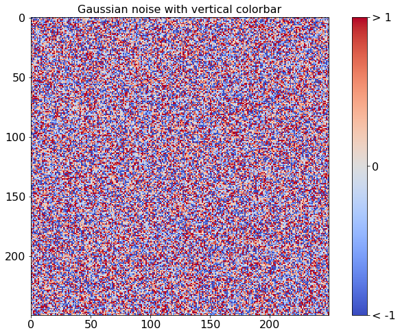

Jupyter Notebooks¶
The nbsphinx extension allow notebooks to be seemlessly integrated into a Sphinx website. This page demonstrates how notebooks are rendered.
Mathematics¶
MathJax can use used to render mathematical equations. Equations can be rendered either in their own line using double dollar signs
\[y_{it} = \alpha_i + \gamma_t + \beta x_{it} + \epsilon_{it}\]
or inline using single dollar signs (\(\LaTeX\)).
DataFrames¶
pandas DataFrames are rendered with useful markup.
[1]:
import numpy as np
import pandas as pd
df = pd.DataFrame({'ints': [1, 2, 3],
'floats': [np.pi, np.exp(1), (1+np.sqrt(5))/2],
'strings': ['aardvark', 'bananarama', 'charcuterie' ]})
df
[1]:
| ints | floats | strings | |
|---|---|---|---|
| 0 | 1 | 3.141593 | aardvark |
| 1 | 2 | 2.718282 | bananarama |
| 2 | 3 | 1.618034 | charcuterie |
Plots and Figures¶
matplotlib can be used to produce plots in notebooks
This example comes from the matplotlib gallery.
[2]:
%matplotlib inline
import numpy as np
import matplotlib.pyplot as plt
from matplotlib import cm
fig, ax = plt.subplots(figsize=(12,8))
data = np.clip(np.random.randn(250, 250), -1, 1)
cax = ax.imshow(data, interpolation='nearest', cmap=cm.coolwarm)
ax.set_title('Gaussian noise with vertical colorbar', fontsize=16)
plt.tick_params(labelsize=16)
# Add colorbar, make sure to specify tick locations to match desired ticklabels
cbar = fig.colorbar(cax, ticks=[-1, 0, 1])
cbar.ax.set_yticklabels(['< -1', '0', '> 1']) # vertically oriented colorbar
cbar.ax.tick_params(labelsize=16)
